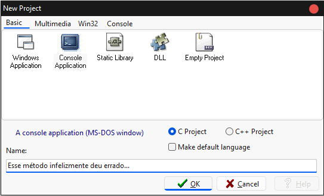
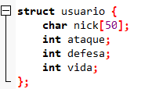
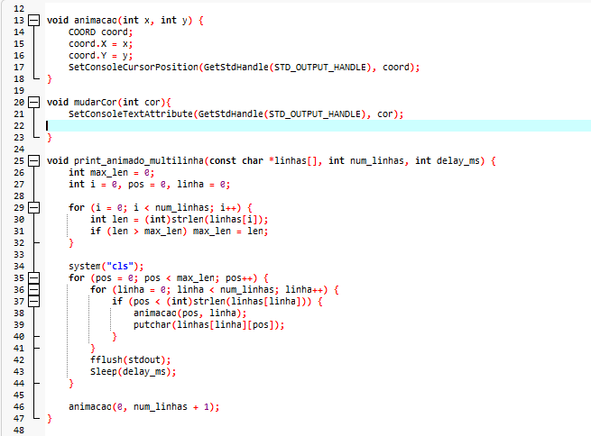
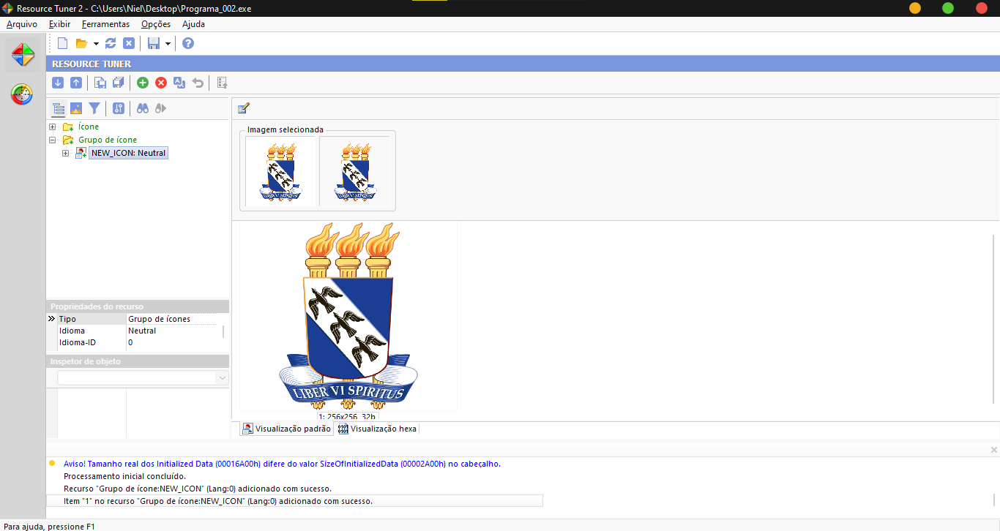

⚙️ Funções: Criando o Menu Principal 🖥️📜
🖥️ Estrutura Base do Nosso RPG 🏰⚔️
🖥️ A Arquitetura do Nosso Jogo em C
A jornada de desenvolvimento do nosso projeto de RPG foi marcada por desafios técnicos e importantes decisões de design. A seguir, detalhamos como o código foi estruturado e as escolhas que fizemos para garantir a estabilidade do produto final.
🏛️ A Decisão Crucial: Do Multiarquivo ao Monolítico
Inicialmente, o projeto foi concebido utilizando a estrutura Console Application C Project, distribuindo o código em vários arquivos. No entanto, essa abordagem logo encontrou grandes obstáculos:

- Problemas de Dependência: A distribuição do executável (.exe) em outros computadores frequentemente resultava em erros de dependência de bibliotecas externas (como libxml ou SDL).
- Portabilidade Limitada: A execução em diferentes sistemas operacionais (como Linux ou macOS) tornava-se inviável devido a essas dependências de pacotes.
| bibliotecas | Finalidade |
|---|---|
#include <stdio.h> |
Entrada e saída (funções como printf e scanf). |
#include <string.h> |
Manipulação de cadeias de caracteres. |
#include <stdbool.h> |
Uso do tipo de dados booleano (true/false). |
🛠️ Configuração Inicial e Estrutura de Dados
- Acentuação: Utilizamos SetConsoleOutputCP(1252) para garantir que o console do Windows exibisse corretamente letras com acentuação, fundamental para a qualidade do nosso texto em português.
- Struct usuario: A estrutura de dados para o herói foi definida com os atributos básicos de um RPG.

✨ Experiência Visual e Animações
Investimos em funções para tornar a experiência no console mais dinâmica:
- Mudar Cor: A função void mudarcor(int cor) utiliza o SetConsoleTextAttribute do Windows, permitindo personalizar a cor do texto do console.
- ASCII Art: Textos de apresentação, como "UERN" e "Projeto RPG", foram convertidos em ASCII Art utilizando a ferramenta patorjk.com/software/taag e integrados ao código usando printf.

🛡️ Validação da Entrada do Jogador
A experiência do usuário começa com a escolha do nick. Implementamos um laço while(!nomevalido) para garantir que o nome seja válido:
- O loop se repete até que um nome aceitável seja fornecido.
- É feita uma verificação para impedir que o nick contenha espaços ou esteja vazio. Caso contrário, um erro é exibido.
- Após a validação bem-sucedida, o nomevalido muda para true, encerrando o loop e exibindo a mensagem de boas-vindas.
📂 Ícone Personalizado do Sistema (.exe) 🛠️
